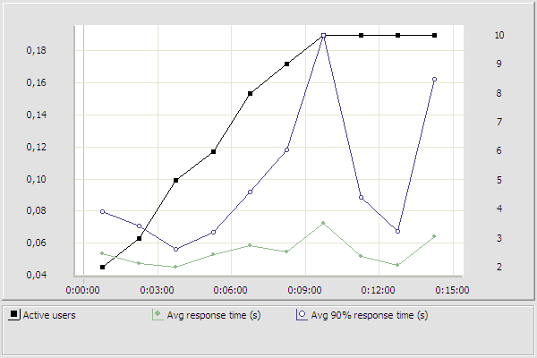

4c_Pollutant_Transfers.page_1: http://prtr-demo.eea.europa.eu/
URI: "http://prtr-demo.eea.europa.eu:80/"

4c_Pollutant_Transfers.page_2: http://prtr-demo.eea.europa.eu/login.aspx?ReturnUrl=%2fHome.aspx
URI: "http://prtr-demo.eea.europa.eu:80/login.aspx?ReturnUrl=%2fHome.aspx"

4c_Pollutant_Transfers.page_3: http://prtr-demo.eea.europa.eu/Home.aspx
URI: "http://prtr-demo.eea.europa.eu:80/Home.aspx"

4c_Pollutant_Transfers.page_4: http://prtr-demo.eea.europa.eu/PollutantTransfers.aspx
URI: "http://prtr-demo.eea.europa.eu:80/PollutantTransfers.aspx"

4c_Pollutant_Transfers.page_5: http://prtr-demo.eea.europa.eu/PollutantTransfers.aspx
URI: "http://prtr-demo.eea.europa.eu:80/PollutantTransfers.aspx"

4c_Pollutant_Transfers.page_6: http://prtr-demo.eea.europa.eu/PollutantTransfers.aspx
URI: "http://prtr-demo.eea.europa.eu:80/PollutantTransfers.aspx"

4c_Pollutant_Transfers.page_7: http://prtr-demo.eea.europa.eu/PollutantTransfers.aspx
URI: "http://prtr-demo.eea.europa.eu:80/PollutantTransfers.aspx"

4c_Pollutant_Transfers.page_8: http://prtr-demo.eea.europa.eu/PollutantTransfers.aspx
URI: "http://prtr-demo.eea.europa.eu:80/PollutantTransfers.aspx"